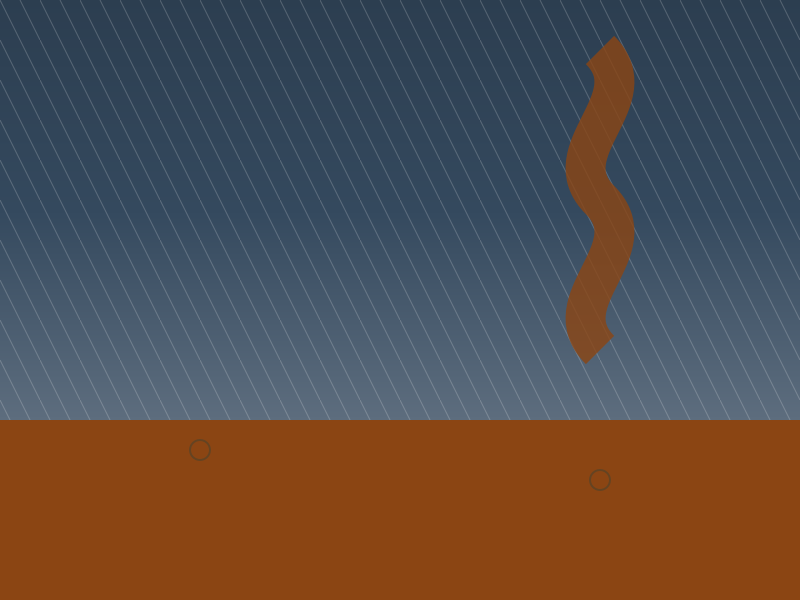

Ý Nghĩa
Sau cơn bão đi qua, chỉ còn lại những dấu vết của mất mát.
Mái nhà bị gió giật tung, đồ đạc chìm trong nước lũ, những con đường quen thuộc trở nên xa lạ trong lớp bùn đất. Nhưng giữa khung cảnh tan hoang ấy, vẫn sáng lên ánh đèn của tình người — nơi những bàn tay cùng nhau dựng lại cuộc sống, san sẻ từng nắm gạo, tấm chăn, lời động viên.
"Thương người miền bão" không chỉ là câu chuyện về mất mát, mà là hành trình của hi vọng và hồi sinh.
Qua mỗi bước đi, bạn sẽ hiểu rằng chuẩn bị tốt — không chỉ để bảo vệ bản thân, mà còn để giữ vững niềm tin cho cả một vùng quê sau bão.